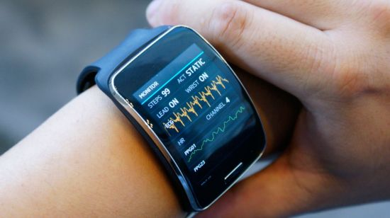

착용 컴퓨터는 안경, 시계, 의복 등과 같이 착용할 수 있는 형태로 된 컴퓨터를 뜻한다. 궁극적으로는 사용자가 거부감 없이 신체의 일부처럼 항상 착용하고 사용할 수 있으며 인간의 능력을 보완하거나 배가시키는 것이 목표이다. 기본 기능들로는 언제 어디서나(항시성), 쉽게 사용할 수 있고(편의성), 착용하여 사용하기에 편하며(착용감), 안전하고 보기 좋은(안정성/사회성) 특성이 요구된다. 이는 단순히 액세서리처럼 전자기기를 몸에 착용하는 것이 아니라, 사용자 신체의 가장 가까운 위치에서 사용자와 소통할 수 있는 전자기기이다. 웨어러블 디바이스의 장점은 주변 환경에 대한 상세 정보나 개인의 신체 변화를 실시간으로 끊이지 않고 지속적으로 수집할 수 있다는 것이다. 예를 들어 스마트 안경의 경우 눈에 보이는 주변의 모든 정보의 기록이 가능하며 스마트 속옷은 체온, 심장박동과 같은 생체신호를 꾸준히 수집할 수 있다.
